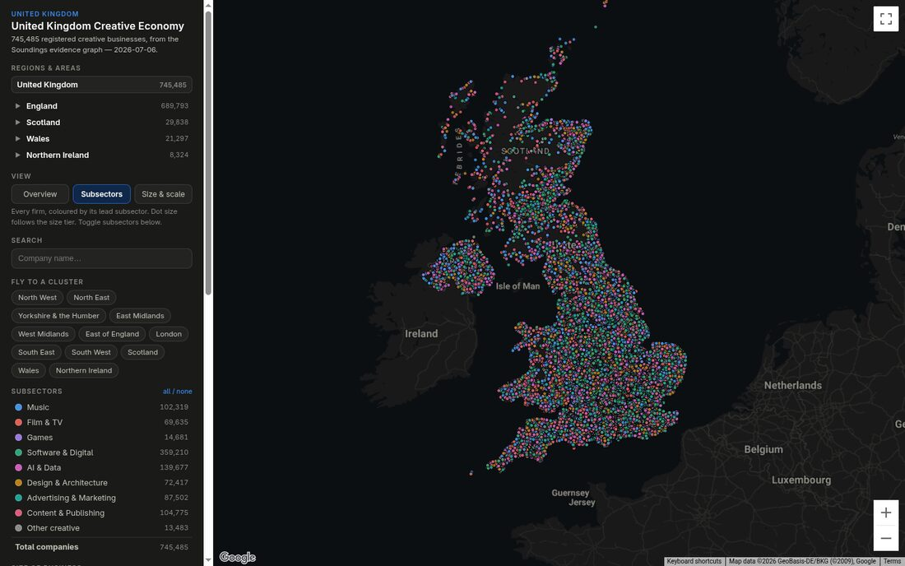
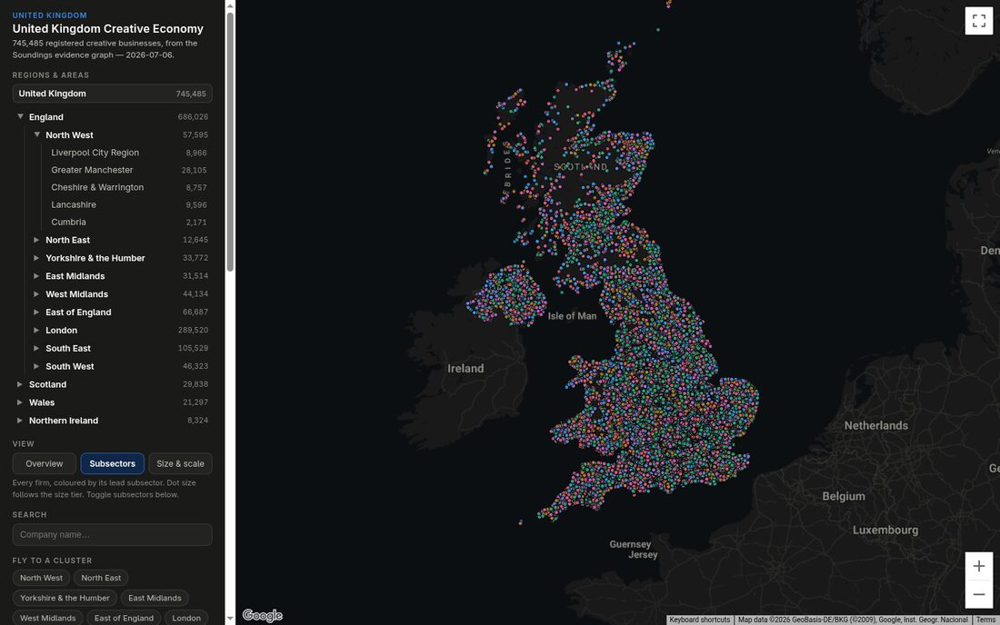
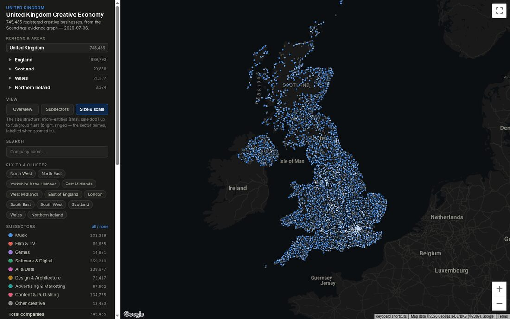
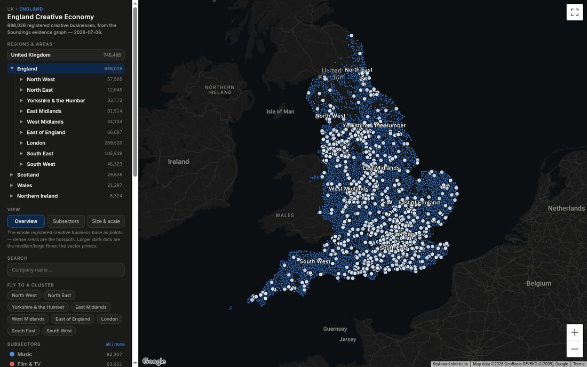
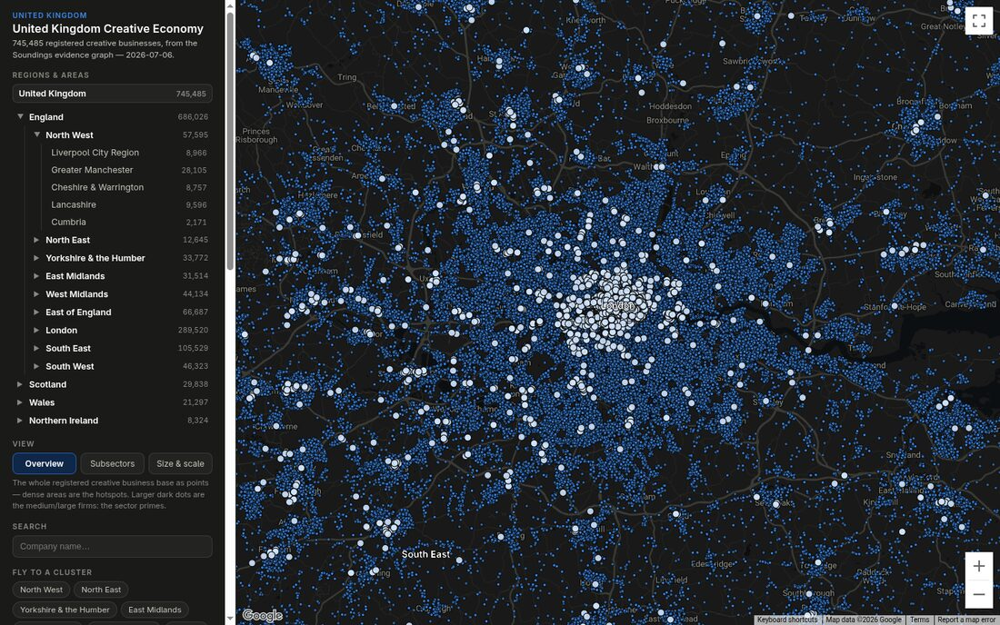
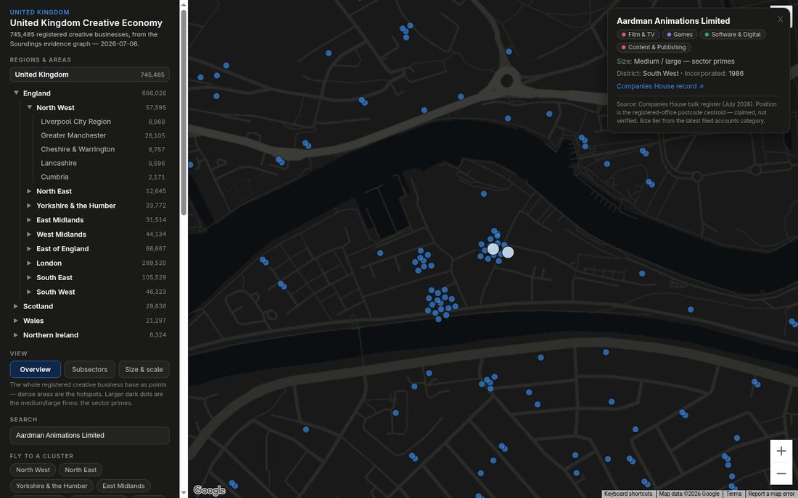
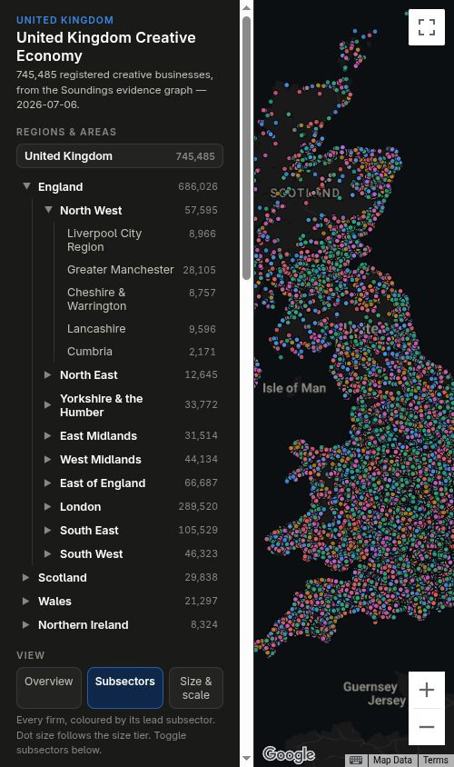

https://soundings-23l.pages.dev/regions-mapSoundings is a genuinely well-crafted single-developer product with real engineering skill on show, one confirmed financial-exposure security issue, a serious accessibility gap, and a large untapped performance headroom. Every advertised function works; the map, search, drill-down and detail cards are correct and fast to interact with. The problems are not in what it does but in three engineering dimensions a buyer or funder would want closed before it carries commercial or public-sector weight.
| Dimension | Verdict | Headline |
|---|---|---|
| Functionality | Strong | All views, drill-down, search, filters, detail cards work; 0 JS errors |
| Engineering craft | 7 / 10 | deck.gl attribute transitions, van Wijk flight maths, compact tuple format, honest provenance UI — held back by zero test seams |
| Data correctness | 1 defect | UK-tree England count (689,793) disagrees with drill-down (686,026) — un-deduplicated sum; author's own comment admits it |
| Security | Medium risk | 1 confirmed billable-key exposure; XSS correctly defended; no PII; hardening headers missing |
| Accessibility | 2 / 10 | Every custom control (views, tree, filters, search) is mouse-only; keyboard/screen-reader users are locked out of core function |
| Performance | Headroom >10× | 21.7 MB / 19 s first load is a design choice, not a limit; ~2 s achievable |
| Value | £45k–£180k | Central £85k–£110k as a transferable asset; capped by free/replicable data source |
The recurring theme across the fleet's five analyses is that the capability is present but the policy or configuration defeats it: the lazy-loading machinery exists but the boot path force-loads everything; the escaping is correct but the security headers are absent; the data-dedup logic is correct at drill level but skipped for the top-level badge; the semantic HTML wins are there (lang, escaping, two real buttons) but every bespoke widget is an unlabelled div. Each is a small, well-scoped fix in the site's own idiom — none require a rewrite.
Soundings is an interactive, whole-UK map of 745,485 registered creative businesses, built from the Companies House bulk register (July 2026), geocoded to registered-office postcode centroids (postcodes.io, OGL), and classified through a proprietary "Soundings operational taxonomy" laid over UK SIC 2007. It presents a hierarchical region tree (UK → four nations → nine English regions → 60+ named sub-regions), three analytical views (Overview, Subsectors — the default, Size & scale), instant full-dataset company search, per-company detail cards with Companies House deep links, and subsector / size-tier / district filtering with fly-to-cluster shortcuts.
The footer positions this viewer as the multi-region sibling of a "North West flagship map" carrying an additional curated venues/festivals/institutions layer, with regions "added as asked" — i.e. a consultancy evidence-base product in the making, not yet a self-serve SaaS.

| Route | Status | Content |
|---|---|---|
| /regions-map | 200 | The application (64 KB single-file HTML, ~1,205 lines inline JS) |
| / | 200 | 174-byte meta-refresh stub → regions-map.html |
| /data/regions_index.js | 200 | Region registry — 60 regions, per-region build dates & counts |
| /data/*_map_data.js (×67) | 200 | Per-region company tuples (21.4 MB total transfer) |
| /robots.txt, /sitemap.xml, /* | 200 ⚠ | All unknown paths return the same 174-byte stub — no real 404, no crawler affordances |
| Metric | Value | Note |
|---|---|---|
| Total transfer, first load | 21.7 MB | 21.4 MB is region data (67 files) |
| Largest single asset | 6.8 MB (compressed) | greater_london_map_data.js — 4.2 s alone |
| DOMContentLoaded | 1.12 s | Shell is fast — sidebar & map frame appear early |
| load event | 19.0 s | All 67 regions load eagerly at startup |
| Caching policy | max-age=0, must-revalidate | Multi-MB files revalidate on every visit; no fingerprinting, no immutable |
| JS console | 0 errors | Only a Chrome WebGL perf warning (GPU stall on buffer mapping) under the 745k-point load |
The 19 s is not a bandwidth limit — on the datacentre link the 21.7 MB arrives in ~2–3 s. The cost is client-side, and it is a design decision. The boot path defaults to the whole-UK view, and loadUK() merges every region's full point set — 745,485 individual companies assembled from ~38 data files on the critical path, loaded serially at the top level. An idle prefetch loop then pulls the remaining ~29 files "just in case" (hence 67 files / 21.7 MB total vs the ~38 files / 18.6 MB the view strictly needs). The dominant delay is the JS engine parsing ~52 MB of decompressed JavaScript source (each data file is a giant array literal of 745k rows) plus a client-side merge-and-dedupe pass.
The irony the performance analyst highlights: at UK zoom, 745k dots overplot into an undifferentiated density cloud where no single point is legible — so the full-fidelity data buys nothing at that zoom. The per-region counts already exist in the 1.6 KB region index; only drill-down actually needs the point rows, and the lazy path for that already exists and works.
| Change | Effect | Impact |
|---|---|---|
| (a) Lazy default view + index-driven totals — don't force-load every region at boot; draw a pre-binned ~50k-point overview, take totals from the index | Removes the 52 MB parse and UK merge from the critical path | 21.7 MB → ~1.4 MB (~15×); does ~90% of the work |
| (b) Binary columnar format (typed arrays via fetch, not script injection) | new Float32Array(buffer) ≈ 0 ms vs seconds of JS parse | Parse seconds → ~100 ms; wire −15–20% |
| (c) Immutable caching + fingerprinted filenames | Kills ~38 conditional 304 round-trips per repeat visit (~4 s of pure latency, zero bytes) | Repeat visit ~4 s → ~0.3 s |
| (e) Viewport deck.gl windowing — stop keeping the full UK set GPU-resident after drill-in | Ends the "GPU stall … mapping device local buffer" warnings | Smoother filter/mode transitions |
| Scenario | Today | Achievable |
|---|---|---|
| First load, 4G (~10 Mbps) | ~25 s | ~2 s |
| First load, fast link | 19 s | ~1.5 s |
| Repeat visit | ~4 s revalidation | ~0.3 s |
| Initial transfer | 21.7 MB | ~1.4 MB |
| JS parsed on load | ~52 MB | ~1 MB binary |
What is already good (keep): compact dictionary-encoded tuple rows, static Cloudflare-Pages/CDN hosting with low TTFB, a single persistent deck.gl layer set with opacity-crossfade view switching, and disciplined client-side caching (parsedCache, memoised visibility, idle-slot warm parsing, retina cap at 1.5×). The fix is to stop doing that work eagerly for all regions — not to remove the caches.
| Behaviour | Result | Evidence |
|---|---|---|
| Region tree drill-down (UK → England → North West) | PASS | H1/breadcrumb/counts update; map reframes (Figs 3–4) |
| View switcher (Overview / Subsectors / Size & scale) | PASS | Legend & description swap (Figs 1–2) |
| Fly-to-cluster, context-sensitive per level | PASS | London flight (Fig 5) |
| Search across 745k records | PASS | "aardman" → 9 group entities, instant (Fig 6) |
| Search-result click → fly + detail card + CH deep link | PASS | Aardman Animations, Bristol; correct sectors, size tier, 1986 (Fig 7) |
| Subsector filter toggle & restore | PASS | Music off → SHOWING 670,960; exact restore |
| Cross-view count consistency | FAIL | England: 689,793 (UK level) vs 686,026 (drilled) — §8 has the root cause |
| Mobile layout ≤ 500 px | FAIL | Fixed 280 px sidebar; map squeezed to 220 px (Fig 8) |
| Crawler/agent affordances (robots, sitemap, meta description, llms.txt) | FAIL | All absent; every path 200s with a stub |
Consolidated across all five fleet analyses, ranked by priority. Severity is calibrated for a public, cookieless, no-auth static data product — not inflated.
| # | Sev | Finding | Area | Fix effort |
|---|---|---|---|---|
| 1 | MED | Google Maps key not effectively restricted — anonymous callers get billable Geocoding + Static Maps (denial-of-wallet). Reproduced by probe. | Security | ~15 min, config only |
| 2 | HIGH | Data inconsistency: England shows 689,793 at UK level vs 686,026 drilled — updateNav() sums region counts with no company-number dedup; drill path dedups. Δ = 3,767 overlaps. | Correctness | Small — badge from deduped set |
| 3 | CRIT×4 | Keyboard/screen-reader lockout: view switcher, region tree, filter chips and map data are all mouse-only div/span with no role/tabindex. A11y maturity 2/10. | Accessibility | 1 shared helper + ~10 edits |
| 4 | MED | 21.7 MB / 19 s first load — boot force-loads all 745k points; lazy machinery exists but is bypassed. ~2 s achievable. | Performance | Medium — change boot path |
| 5 | MED | No Content-Security-Policy; deck.gl loaded from unpkg via mutable @9 tag with no SRI (supply-chain drift, full page privileges). | Security | Medium — _headers + pin/self-host |
| 6 | MOD | Mobile layout broken ≤ 500px — fixed 280px sidebar never collapses; map squeezed to ~110px on a real phone. | UX | Medium — responsive layout |
| 7 | MOD | SEO/crawler blind: no robots.txt, sitemap, meta description, llms.txt or OG cards; every path 200s with a 174-byte stub. | SEO | Small |
| 8 | MOD | Colour-contrast fail (4.37:1) on muted count text; no <main> landmark; H2 precedes H1. | Accessibility | Small — 1 token + 2 attrs |
| 9 | MOD | Unhandled promise rejection on a failed leaf data-load (switchRegion has no .catch) → dead click, no error UI. | Robustness | Small |
| 10 | LOW | Missing hardening headers (HSTS, X-Frame-Options, Permissions-Policy); API-key input is type=password (credential-manager confusion, not a leak); caching sends max-age=0 on multi-MB files. | Security/Perf | Small — _headers |
The app gets the free wins — <html lang="en">, a title, correctly escaped output, and two real <button> elements — but every control it built itself is a <div> or <span> with an onclick and nothing else: no role, no tabindex, no keyboard handler. There are zero ARIA attributes, zero <label> elements, no live region, and no landmarks in the entire document. Keyboard-only and screen-reader users cannot switch views, drill the region tree, apply a filter, or read a company record.
| Critical findings | WCAG 2.2 | Why it matters |
|---|---|---|
| View-mode switcher is 3 mouse-only divs | 2.1.1, 4.1.2 | Users are locked into the default Subsectors view |
| Region tree (60+ rows) mouse-only, no tree/expand semantics | 2.1.1, 4.1.2, 1.3.1 | The app's primary navigation is unreachable without a mouse |
| Filter chips mouse-only; on/off state by opacity alone | 2.1.1, 4.1.2, 1.4.1 | Filtering 745k records is impossible for keyboard/SR users |
| Map canvas has no non-visual alternative; point data hover-only | 1.1.1, 2.1.1 | The core content exists only as pixels |
The good news: the fix surface is small and idiomatic. The a11y analyst supplied a single ~15-line actuate() helper (adds role, tabindex and Enter/Space handling to any element) that, plus a focus-visible CSS block and a .visually-hidden utility, unblocks seven of the findings at once. The remaining items are a one-line contrast-token change (--muted #898781 → #9a988f), promoting #map to <main>, and adding one polite live region. No framework, no build step — every fix is a drop-in. Full remediation code with line references: data/fleet/a11y-findings.md.
The source comment claims the Maps key is "referrer-restricted … so it only works on this site's domains." The probes refute that. Both a Static Maps request and a Geocoding request returned HTTP 200 with real billable results when sent with no Referer and again with a hostile Referer: https://evil.example.com/.
| Probe | Referer | Result |
|---|---|---|
| Static Maps API | none / evil.example.com | 200, valid PNG tile served |
| Geocoding API | none / evil.example.com | 200, "status":"OK", real results |
Web-service APIs (Geocoding, Directions, Places) cannot be referrer-restricted at all — the Geocoding success proves they are enabled on this key with no effective restriction. An attacker scrapes the key from page source and scripts billable calls against the owner's account. Remediation (~15 min, config only): in Google Cloud Console, restrict the key's application to HTTP referrers on soundings-23l.pages.dev/*, restrict its APIs to the Maps JavaScript API only (explicitly disabling Geocoding/Static Maps/Directions/Places), and set a billing budget + quota cap. The app already degrades gracefully to a "map temporarily unavailable" panel, so a quota cap bounds the worst case cleanly.
Positives confirmed: correct output escaping on all data sinks; rel="noopener" on the external link; nosniff and a sane referrer-policy already present; wildcard CORS is harmless-to-beneficial for an open dataset; no PII beyond the public Companies House register. Full detail incl. the CSP value and SRI hash: data/fleet/security-findings.md.
The code reviewer traced it precisely. The UK-level England badge is computed in updateNav() (lines 838–843) as a naïve arithmetic sum of per-region index counts — mixing whole-region file counts for some nations with sums of child counts for the five "combine" regions — with no deduplication. That sum double-counts child files that overlap within a region (e.g. north_devon ⊂ devon) and companies whose registered-office postcode straddles a nation boundary. The drill-down value comes from mergePayloads() (lines 538–554), which dedups on Companies House number. The 3,767-company delta is exactly those overlaps. Reconstructing the naïve sum against the shipped index reproduces 689,793 to the digit — and the author knew: a comment reads "overlapping lenses may double-count." The clean fix is to size every group badge from a deduplicated set of company numbers, eliminating the sum path.
Real weaknesses: zero testability (no modules, no exports, everything closes over live singletons and writes straight to the DOM — for a product whose whole value is counts being correct, this is the most consequential gap); an unhandled promise rejection on a failed leaf load; 60+ mutable window globals from the data layer; and the a11y gaps above. The "add a region = drop a data file" claim mostly holds — discovery is genuinely zero-touch — but correct hierarchical placement still needs one NAV array edit.
| Component | Person-days |
|---|---|
| Viewer (deck.gl orchestration, flight maths, region tree, parsing/caching, panel/cards, CSS, perf tuning) | ~10 |
| Data pipeline (Companies House ingest, SIC→taxonomy mapping, postcode geocoding, size-tier classification, per-region dedup + file generation, cluster curation) | ~15 |
| Total embodied effort | ~25 (range 22–29) |
The SIC-2007 → "Soundings operational taxonomy" mapping is the single largest uncertainty and the most defensible IP; a thin lookup is cheap, a substantial curated asset pushes pipeline effort higher. Full analysis with line references: data/fleet/code-review-findings.md.
| Lens | Basis | Range | Central |
|---|---|---|---|
| A — Replacement / build cost | 40–90 person-days × £600–900/day UK senior contractor | £24k – £81k | ~£49k |
| B — Market comparables | Licence benchmarked to The Data City tiers, discounted 30–40% for narrower scope; per-region commission engine | £20k–£40k/yr recurring (capitalised £40k–£160k) | ~£30k/yr |
| C — Strategic / IP asset | Taxonomy IP + reproducible pipeline + whole-UK coverage, sold as an asset | £60k – £250k | ~£130k |






Evidence was captured live on 13 July 2026 with an instrumented Chrome (chrome-devtools-mcp on a GPU sidecar): accessibility-tree snapshots, viewport screenshots, Resource Timing measurements, console and network logs, Lighthouse (navigation mode, desktop), plus read-only curl probes for headers and route behaviour. A five-agent QE fleet (accessibility, security, performance, code review, market research) then analysed the captured artifacts in parallel; the collector-then-analysts topology avoids contention on the shared browser.
| Artifact | Path |
|---|---|
| Evidence brief (fleet input) | data/evidence-brief.md |
| App source (as served) | data/regions-map.html |
| Region registry | data/regions_index.js |
| Lighthouse report | data/lighthouse/report.{json,html} |
| Fleet reports ×5 | data/fleet/*.md |
| Screenshots ×9 (full-res PNG) | screenshots/ |
Caveats: single-location measurement (UK edge, datacentre bandwidth — consumer 4G will be slower than the 19 s observed for full load); Lighthouse performance category not run (canvas-heavy SPA — Resource Timing used instead); the unrelated browser tab present in the shared sidecar was left untouched; no write/mutation testing was performed against the live site.